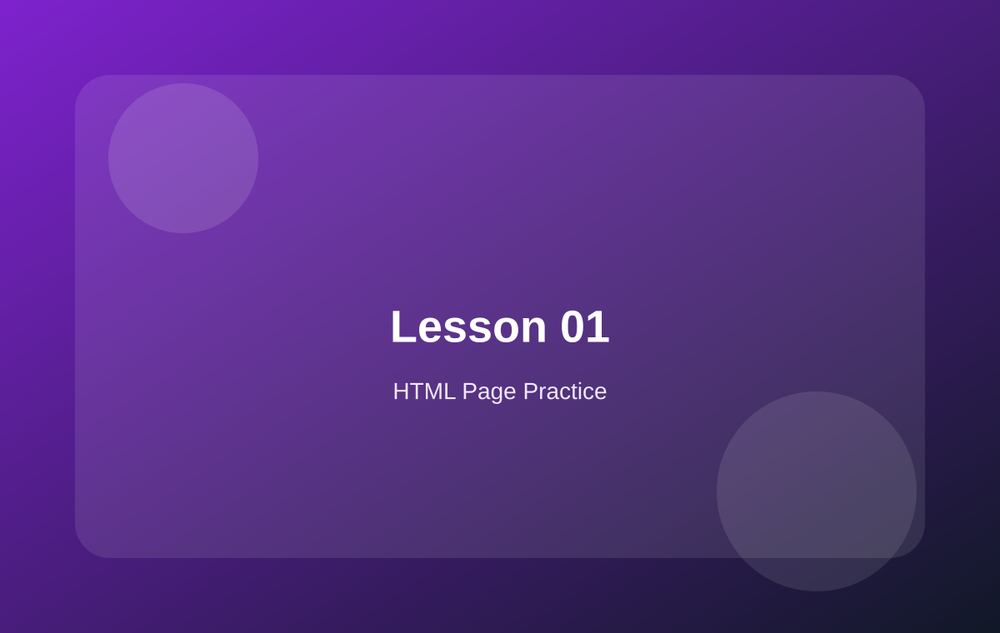

01 页面结构：先搭 WooCommerce 页面骨架
从 Header、Hero、Products、Footer 开始理解电商页面。

本页学习重点
页面骨架示例
EVODEK Store

<header>...</header>
<main>
<section class="hero">...</section>
<section class="products">...</section>
</main>
本页总结
先把页面区块拆清楚，后面理解 WooCommerce 模板会轻松很多。